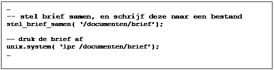

De
External Procedure Call toolkit
Communicatie met externe systemen vanuit het Oracle RDBMS
Huub van der Wouden
Gert-Jan Paulissen
Transfer Solutions bv
1.
Communicatie met externe
systemen
En van de
problemen die we regelmatig tegen komen bij het werken met Oracle produkten,
betreft communicatie met externe systemen. Onze Oracle-applicaties moeten
gegevens uitwisselen met andere applicaties, en die uitwisseling kan veel
verschillende vormen aannemen:
In
n applicatie moesten een aantal belangrijke tabellen bewaakt worden
wijzigingen in die tabellen moesten onmiddelijk gemeld worden aan de
applicatiebeheerder. Het notificatiemechanisme dat de voorkeur had was email
hoe bouw je zoiets in Oracle?
In
een andere applicatie moesten rapportages geprint worden na afloop van een
batchjob, die vanuit de database zelf (met behulp van DBMS_JOB) gestart werd.
Hoe kun je ook de controle over de printjob binnen de database houden?
In
een transportsysteem dat wij recent n van onze klanten hebben helpen bouwen, moest
de database realtime communiceren met zowel een groot aantal
hardwarecomponenten als met een andere Oracle database. Hoe creer je een
architectuur die alle gegevensstromen op een nette manier kan reguleren?
Een laatste voorbeeld betreft een probleem dat een klant van ons in het verzekeringswezen had. Hij beschikte over een grote bibliotheek met actuarile functies, gemplementeerd in de taal C. Hij wilde die bibliotheek, waar jaren werk in zat, graag gebruiken bij berekeningen die vanuit de Oracle database werden genitieerd. Of wij hier een oplossing voor wisten?
De frequentie
waarmee deze problematiek opduikt in projekten maakt een generieke oplossing
wenselijk. In dit artikel beschrijven wij een architectuur voor de communicatie
tussen Oracle-gebaseerde, en buiten Oracle gerealiseerde functionaliteit. Aan
de hand van een concreet voorbeeld laten we zien, hoe deze in de praktijk door
ontwikkelaars gebruikt wordt.
2.
Gebruik van externe
software in Oracle-applicaties
Communicatie met
externe systemen kan in twee richtingen verlopen:
1. het externe systeem maakt gebruik van
functionaliteit in de database-applicatie; of
2. de database-applicatie maakt gebruik van
functionaliteit in het externe systeem.
Voor het eerste
geval zijn goede oplossingen voor handen: op operating system nivo kan via
SQL*Plus de database benaderd worden, en voor benadering vanuit 3GL-applicaties
heeft Oracle een API (Application Programming Interface de Oracle Call
Interface, OCI) en een aantal precompilers ontwikkeld (bijvoorbeeld Pro*C). In
zon geval neemt de externe toepassing de rol aan van Oracle-client, die via
n of meerdere connecties kan communiceren met de database-server.
Het tweede geval
is lastiger. Stel dat we vanuit onze database-applicatie een pakket willen
gebruiken (laten we het pakket CallMe noemen), dat zijn functionaliteit via een
API in C aan de buitenwereld ter beschikking stelt. Vanuit Oracle Forms clients
is dat mogelijk via zogenaamde user-exits.
Hierbij kan de client-applicatie gebruik maken van extern gedefinieerde
functionaliteit door een objectfile mee te linken met de runform executable. Belangrijk is hier, dat een andere executable
gebouwd wordt.
Aan de clientkant
zijn daar geen principile bezwaren tegen de ontwikkelaar van de
client-applicatie is immers volledig verantwoordelijk voor de functionaliteit
die hij of zij middels de applicatie aan de gebruikersgemeenschap ter
beschikking stelt.
Aan de serverkant
ligt dat heel anders. Stel je eens voor, dat we voor het gebruik van CallMe de
Oracle serverprocessen zouden moeten wijzigen! De risikos voor de gebruikers
van server-functionaliteit zijn enorm, terwijl zij misschien helemaal niets met
CallMe te maken hebben. Uiteraard overtreedt een dergelijke opzet alle regels
voor modulaire systeemarchitecturen. Het dus niet meer dan logisch dat Oracle
zon mogelijkheid niet biedt.
2.1 Gebruik van externe software in Oracle8
De oplossing voor
gebruik van externe software aan de serverkant is, deze functionaliteit in een
separaat proces te realiseren, en een communicatie-mechanisme op te zetten
tussen het RDBMS en dit proces. Deze oplossing is in Oracle8 aanwezig. Aan het
eind van het artikel komen we hier nog op terug.
2.2
Communicatie via database pipes in Oracle7
Voor eenvoudige
ontwikkelaars zoals wij, die geen direkte toegang hebben tot de code van de
Oracle kernel, zijn er andere mechanismen beschikbaar. Database pipes is daar
een voorbeeld van.
Met behulp van database pipes (beschikbaar via het Oracle DBMS_PIPE package) kan een communicatiemechanisme tussen Oracle database sessies worden opgezet. Database pipes werken net als Unix pipes: aan de ene kant van de pipe gaan er berichten in, en aan de andere kant komen er berichten uit. Het verschil is, dat:
De
pipes zich binnen het RDBMS bevinden, en dat
het
in de pipe stoppen van een bericht en het er uit halen ervan, geschiedt met
behulp van PL/SQL procedures, die vanuit een willkeurig programma kunnen worden
aangeroepen.
In een uitstekend artikel [Hoechst 1993]
beschrijft Tim Hoechst van Oracle Federal hoe je database pipes kunt gebruiken
voor het realiseren voor wat hij application
servers noemt: programmas die een dienst verzorgen die niet door het RDBMS
zelf verzorgd kan worden. Voor het gebruiken van die dienst stuurt een
applicatie een verzoek de database pipe (request
pipe) in; de applicatieserver luistert op die pipe, leest het verzoek uit,
levert de verzochte dienst, en geeft eventueel terugkoppeling aan de
verzoekende applicatie over het resultaat. Dit laatste geschiedt via een andere
pipe (de result pipe) dan degene
waarover het verzoek binnen kwam. Dit is nodig, omdat het communicatiekanaal
waarover het antwoord verstuurd wordt alleen toegankelijk moet zijn voor de
applicatie die het verzoek plaatste. De naam van de result pipe wordt
meegestuurd in het verzoek een soort zelf-geadresseerde antwoordenvelop.
Figuur 1 illustreert dit mechanisme:
Figuur 1: Communicatie via database pipes
Om dit mechanisme
te realiseren moet zowel aan de clientkant als aan de serverkant het nodige
programmeerwerk verricht worden. Om dit voor iedere toepassing vanaf de grond
op te bouwen is niet erg efficient, en wij hebben er voor gekozen om de
toepasbaarheid van het mechanisme middels een generieke toolkit, de External Procedure Call toolkit, te vergroten.
3. Een generieke oplossing: de EPC toolkit
De EPC-toolkit
moest aan een aantal eisen voldoen:
Transparantie aan de clientkant. Het moet voor de client onzichtbaar
zijn, hoe de PL/SQL functie gemplementeerd is. Of dat nu in PL/SQL zelf is,
die binnen het RDBMS wordt uitgevoerd, of in C-code, die in een ander proces
wordt uitgevoerd: het maakt de client in feite niets uit. De client is alleen
maar genteresseerd in het resultaat van de aanroep.
Gemak in gebruik voor de ontwikkelaar. Het moet eenvoudig zijn om nieuwe,
extern uitgevoerde functionaliteit aan het systeem toe te voegen. De
verantwoordelijkheid van de ontwikkelaar moet beperkt blijven tot het
specificeren van de interface. Het ingewikkelde vertaalwerk in de ingewanden
van het mechanisme moet verborgen kunnen blijven.
Flexibiliteit en uitbreidbaarheid. De application servers (in de betekenis
zoals hierboven besproken; deze worden ook wel listeners genoemd) moeten een modulair karakter hebben;
functionaliteit moet gemakkelijk aan de ene of andere listener toegewezen
kunnen worden; listeners moeten gemakkelijk verhuisd kunnen worden naar een
andere processor; kortom, het EPC-concept moet flexibele architecturen
ondersteunen.
De runtime architectuur
van applicaties die van de EPC-toolkit gebruik maken is identiek aan die
getoond in Figuur 1. In het resterende deel van het artikel
zullen we beschrijven hoe met behulp van de toolkit de listener gebouwd kan
worden die een bepaalde dienst implementeert, en hoe de code tot stand komt die
in de clients nodig is om van die dienst gebruik te maken.
4. Client en
serverconstructie met de EPC-toolkit
Het voorbeeld dat
we zullen gebruiken ter illustratie is eenvoudig. Stel we moeten een applicatie
bouwen waarbij de database server op een Unix-platform draait. Wij willen nu
onze Forms-clients de mogelijkheid geven, om gebruik te maken van standaard
Unix operating system commandos, bijvoorbeeld lpr, of mail. Voor het
uitvoeren van deze commandos bestaat in Unix in n van de standaard
C-libraries de system call system(), en wij
willen nu dat deze procedure vanuit PL/SQL aangeroepen kan worden.
Het
constructieproces van zowel client als server wordt geschetst in onderstaande
figuur:
Figuur 2: Constructieproces met de
EPC-toolkit
In de figuur
maken de grijsgetinte componenten deel uit van de EPC-toolkit; de gearceerde
component moet door de ontwikkelaar worden gespecificeerd.
4.1 De IDL Compiler en de
specificatie van de interface
De eerste stap
bij het creren van external procedure calls is het specificeren van de
interface. Dit gebeurt met behulp van een speciale taal, IDL genaamd. IDL
(Interface Definition Language) wordt gebruikt bij de specificatie van remote
procedure calls in gedistribueerde omgevingen zoals bijvoorbeeld OSF DCE en
CORBA. Wij hebben dezelfde IDL gebruikt, omdat tenslotte onze external
procedure calls in feite gewone remote procedure calls zijn: procedures die
vanuit het ene proces worden aangeroepen, maar in een ander proces worden
uitgevoerd. Een inleiding in RPCs en het gebruik van IDL kan worden gevonden
in bijvoorbeeld [OSF 1992]. In ons voorbeeld ziet de interface definitie er als
volgt uit:
Figuur 3: unix.idl
De naam van de
interface is unix; de interface bevat
n procedure (functie zonder returnwaarde), system, die n inputparameter van het type char* heeft. Deze parameter symboliseert het door Unix uit te
voeren commando.
De IDL-compiler
is ontwikkeld met behulp van lex en yacc, twee standaard hulpmiddelen uit de
Unix-wereld voor het bouwen van parsers en compilers. Hierbij wordt gebruikt
gemaakt van een expliciete representatie van de IDL, zodat deze eventueel
gemakkelijk aan te passen is.
4.1.1 Het Remote Procedure Call mechanisme
Vervolgens laten
we onze idl-file door de IDL-compiler verwerken. De IDL-compiler maakt deel uit
van de EPC-toolkit, en produceert op basis van de idl-file twee bestanden: de
code die aan de clientkant gebruikt gaan worden voor het aanroepen van de
procedure (de zogenaamde client stub),
en de code die aan de serverkant gebruikt gaat worden om de aanroep te
verwerken (de zogenaamde server skeleton).
Om de inhoud van
die bestanden te begrijpen moeten we wat weten van de afhandeling van remote
procedure calls. In een gedistribueerde omgeving wordt een door de client
aangeroepen RPC als volgt uitgevoerd:
1. Allereerst wordt van de aanroep van de
client een net bericht gemaakt, dat alle gegevens bevat van de aanroep: de naam
van de functie, de namen en waarden van de parameters, een identificatie van de
client, enzovoorts. Dit verpakken heet marshalling;
in de client stub bevindt zich code die voor marshalling zorg
draagt.
2. Dit bericht wordt verzonden naar de server
aan wie de client het verzoek gericht heeft. Dit kan zowel synchroon (de client
wacht op het antwoord van de server) als asynchroon (de client wacht niet)
plaats vinden.
3. De server pakt vervolgens het bericht uit
(unmarshalling), en zorgt ervoor dat
de juiste code wordt aangeroepen om de functie uit te voeren.
4. Indien een returnwaarde gespecificeerd is,
of indien de status van de aanroep aan de client gerapporteerd moet worden,
verpakt de server de gewenste informatie, en stuurt het terug naar de client.
5. De client ontvangt het resultaat, en kan
verder gaan met waar hij op dat moment mee bezig was.
4.1.2 Client stub-code
Voor ons
voorbeeld ziet de client stub-code er als volgt uit:

Figuur 4: Client stub-code: unix.pck
In de stubcode
wordt gebruikt gemaakt van het EPC-package, waarin de marshallingfuncties
gedefinieerd zijn. Merk op, dat in dit voorbeeld geen listenernaam
gespecificeerd is. De methode die bepaalt van welke listener gebruik gemaakt
gaat worden, maakt deel uit van het EPC-package. Hier komen we later nog op
terug. Na generatie wordt het package unix
via SQL*Plus in de database gecreerd.
4.1.3 Server skeleton-code
Het server
skeleton ziet er als volgt uit (code die niet relevant is hebben we voor de
duidelijkheid weggelaten):

Figuur 5: Server skeleton code: unix.c
Zoals te zien is,
worden in de functie _system alleen
de parameters uitgepakt. Het uitpakken van de volledige aanroep heeft al eerder
plaatsgevonden in een functie die zich in de EPC C-library bevindt, en die
wordt aangeroepen in de main loop van de EPC-listener. De skeleton code wordt
via de Oracle Pro*C precompiler en de standaard Unix C-compiler tot
object-files getransformeerd. De functie system(), die midden in het skeleton
wordt aangeroepen, bevindt zich in een standaard Unix-library.
4.2 De EPC-Listener
De main() functie van de EPC-listener moet door de ontwikkelaar zelf gebouwd worden. In de EPC-toolkit wordt echter een standaard main()-functie (epc_main() ) meegeleverd, zodat voor de doorsnee-listener niet gecodeerd behoeft te worden. De EPC-listener moet vanaf de command line worden opgestart met de parameters Oracle-username, Oracle-password, en de naam van de requestpipe die door de listener gebruikt wordt om binnenkomende verzoeken te kunnen ontvangen. De epc_main draagt zorg voor de volgende functionaliteit:
Het
maken van een connectie met de database
Het afhandelen van client requests
Nette fout- en signaalafhandeling
In de
EPC-listener executable moet de volgende functionaliteit gentegreerd worden
worden:
Allereerst
natuurlijk de C-functies die we vanuit PL/SQL willen aanroepen.
Vervolgens
de door de IDL-compiler gegeneerde interface-code (de server skeletons); in
deze code wordt weer gebruikt gemaakt van functionaliteit in de EPC-library.
De
EPC-library, die zorg draagt voor standaardfuncties voor applicatie
initialisatie, het beheren van de request en result pipes, en het in- en
uitpakken van berichten.
Tenslotte
de code van de main module van de EPC-listener.
5.
Een voorbeeld: printen op de
server
Stel we hebben
een applicatie gebouwd waarin vanuit een package op de database-server brieven
worden samengesteld. Die brieven moeten zodra de benodigde gegevens aanwezig
zijn afgedrukt worden. Om dit te realiseren hebben we een trigger gebouwd op
een tabel, die de brief samenstelt, naar een bestand schrijft, en hem afdrukt.
We maken hiervoor gebruik van de unix-interface
en de EPC-listener die we hierboven hebben beschreven. De trigger code ziet er
als volgt uit:

Figuur 6: Triggercode met gebruik van unix package
We starten de EPC-listener op dezelfde machine als waar het RDBMS op draait. De afhandeling verloopt zoals geschetst in onderstaande figuur:
Figuur 7: Afhandeling van printverzoek
6. Alternatieve
architecturen
Wat we zover geschetst hebben is het meest eenvoudige gebruik van de EPC-toolkit. Er zijn diverse varianten mogelijk:
Verschillende listeners voor verschillende
diensten. Het is mogelijk
om iedere interface te laten implementeren door een andere listener. Dit maakt
het niet alleen mogelijk om een modulaire verzameling diensten te creren, maar
ook om EPC-requests parallel uit te voeren. Dit laatste kan uiteraard ook door
n multi-threaded EPC-listener worden gerealiseerd.
Verschillende listeners op verschillende
processoren. Door
bovengenoemde modulariteit is het mogelijk om bijvoorbeeld zeer
arbeidsintensieve taken op een andere machine uit te voeren. Omdat de
EPC-listeners via SQL*Net met het RDBMS communiceren, maakt het niet uit op
welke machine de diensten worden uitgevoerd.
Dynamische lokalisatie van EPC-listeners. In alle tot nog toe genoemde voorbeelden
is het nodig geweest om de naam van de EPC-listener die een bepaalde interface
implementeert, bij de client bekend te laten zijn (nauwkeuriger, de naam van de
request pipe via welke de listener te benaderen is). Een flexibelere benadering
zou zijn, om request broker
functionaliteit via een PL/SQL package op de database-server te realiseren. In
de lucht zijnde EPC-listeners kunnen zich bij de broker registreren, zodat de
broker (al of niet intelligent) de verzoeken van clients aan de juiste
EPC-listener kan doorspelen.
In Oracle8 is het ook mogelijk om procedures te definieren, die aangeroepen kunnen worden vanuit PL/SQL, maar gemplementeerd zijn in een 3GL. Bij de Oracle-implementatie is er echter voor gekozen om het opstarten van de EPC-listener door het RDBMS zelf te laten uitvoeren, wat verder niet door de ontwikkelaar benvloed kan worden. Bovengenoemde architecturen zullen daarom veel moeilijker te realiseren zijn.
7. Literatuur
De basis voor het
gebruik van database pipes:
Oracle7 Server Application Developers Guide, Chapter 8: Sending Messages Between Sessions with Pipes.
Inleiding in RPC mechanismen (waaronder IDL):
Open Software Foundation (1992) Introduction to OSFDCE; Prentice-Hall.
Gebruik van pipes
voor external procedure calls:
Hoechst, Timothy G. (1993): Application Servers: Exploiting Oracle7 Database Pipes; Proceedings IOUG 1993.